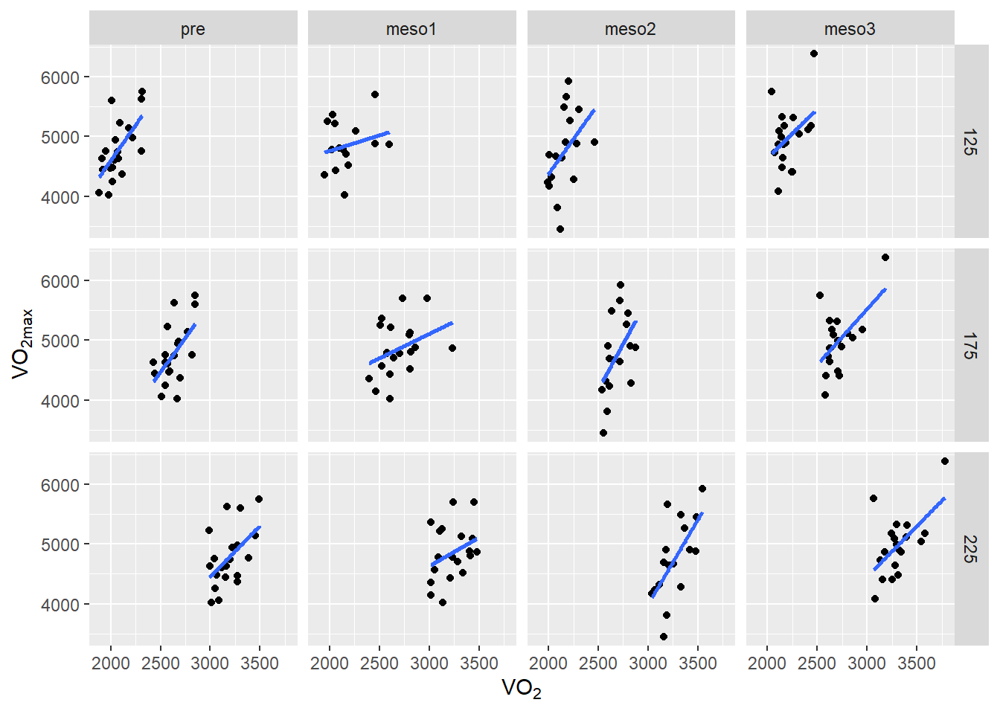
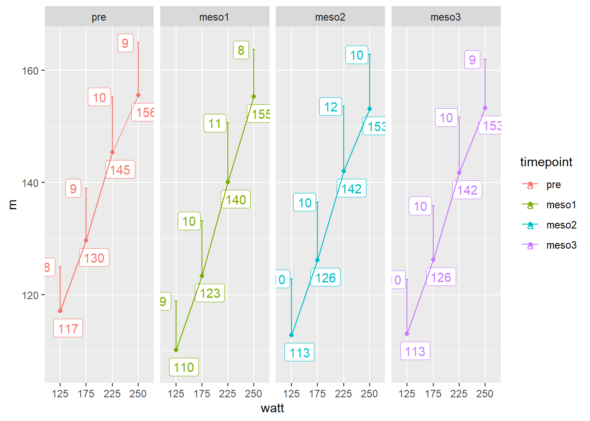

You can find solutions to these exercises here
In this assignment you are asked to reproduce at least 3 of 4 figures. We will be using the cycling data set and ggplot2 together with dplyr and tidyr. The graphs to reproduce are shown below together with instructions for each graph.
You might find useful tips in these examples.
Anaerobic performance might be affected by endurance training, to see if changes in performance in a non-specific exercise (counter-movement jump) is related to changes in cycling-specific peak-power we are going to plot the two.
Relevant variables from the cyclingStudy data set are
| Variable | Description |
|---|---|
subject |
ID of participants |
timepoint |
Time-point for testing pre-training (pre), and after each training period (meso1-meso3) |
cmj.max |
Counter movement jump performance |
peak.power |
Peak power from a Wingate test |
To calculate relative change of a variable, one solution would be to make the data into wide format. As we load the cyclingStudy data set, this part of the data is in long and tidy format. Each row is an observation and each column is a variable. If we use pivot_wider() we can get each time-point to a single column. An example:
# Load packages
library(tidyverse)
library(readxl)
cyclingStudy <- read_excel("./data/cyclingStudy.xlsx", na = "NA")
cyclingStudy %>%
select(subject, timepoint, cmj.max) %>%
pivot_wider(names_from = timepoint,
values_from = cmj.max) %>%
print()The mutate() function can be used to calculate the percentage change. We are interested in calculating
\[\%~Change = 100 * \bigg( \frac{Post}{Pre}-1\bigg)\]
In the mutate command, this will be:
mutate(change = (( meso3 / pre) -1) * 100)
A tricky part of this operation is that you want to do pivoting with two variables. To accomplish this you might want to look into unite() and separate() function.
In the figure below, we display percentage increase in VO2max (ml-1 kg-1 min-1) per group. Relevant variables from the cyclingStudy data set are:
| Variable | Description |
|---|---|
subject |
ID of participants |
timepoint |
Time-point for testing pre-training (pre), and after each training period (meso1-meso3) |
group |
ID of the groups, INCR, DECR and MIX |
weight.T1 |
Body mass |
VO2.max |
VO2max in ml-1 min-1 |
In the figure below the following tips may be useful.
sd()), and the number of observations. In the case where we do not have any NA, we could use the n() function. However, here we want to count the number of observations with data. An alternative is to do n = sum(!is.na(variable)) where variable is the variable you are interested in calculating the number on non-NA in. is.na() returns “TRUE” if a row is NA and “FALSE” if the row is not NA. When we use the ! sign, we reverse this. The sum function calculates the number of “TRUE”. The confidence interval can be calculated from a t-distribution using the qt() function using the following code:error = qt(0.975, df = n - 1) * sd/sqrt(n)
nis the number of non-NA observation, sd is the standard deviation. This code would go into the summarise() function after a group by:... %>%
group_by(group) %>%
summarise(m = mean(change, na.rm = TRUE),
s = sd(change, na.rm = TRUE),
n = sum(!(is.na(change))),
error = qt(0.975, df = n-1) * s/sqrt(n)) %>%In the above code, ... stands for operations that I have done but not shown. The new variable error is the distance from the mean that represents one side of the confidence interval.
geom_point() can take different shape arguments. Different shapes can be found here. We want a shape that can be filled. The size settings might need changing?
Google: “how to plot plus minus sign Unicode ggplot2” to see information about the \(\pm\) sign in the y-axis label.
geom_hline() will produce a horizontal line given the right arguments, line types can be found here
Themes are an easy way to change the overall appearance of a graph. Try theme_bw(), theme_classic() or theme_light, which one suits best?
See the help files for scale_y_continuous to see how to change the y-axis.
To display data in different panels can be useful when doing exploration graphics. Here we will plot maximal VO2 against sub maximal VO2 per test and watt.
Tips for the figure below:
geom_smooth in the help files (´?geom_smooth`), this function is used to add regression lines to the graph.mutate(timepoint = factor(timepoint, levels = c("pre", "meso1", "meso2", "meso3"))) is helpful.VO2.125:VO2.225) into one variable, pivot_longer() is needed. As you will see, all other variables will duplicate when using the pivot_longer() function. (TIP: Work with a smaller data set, use select())
We will now use sub maximal heart rate values (HF.125 to HF.250) and plot these against watt. We are interested in the mean and standard deviation per time point.
HF.125 to HF.250 in long format.timepoint using factor().width = in geom_errorbar() is set to 0.1. geom_label(aes(label = round(m, 0)), nudge_y = -3, nudge_x = 0.3) +
geom_label(aes(y = m + sd, label = round(sd, 0)), nudge_x = -0.5) 
You re required to hand in a .R file or .Rmd file that produces the above figures. You are also required to study and give comments on a friends assignment. This will all be done on canvas. Hand in your assignment in Oppgaver on Canvas no later than Sunday.
Good luck!